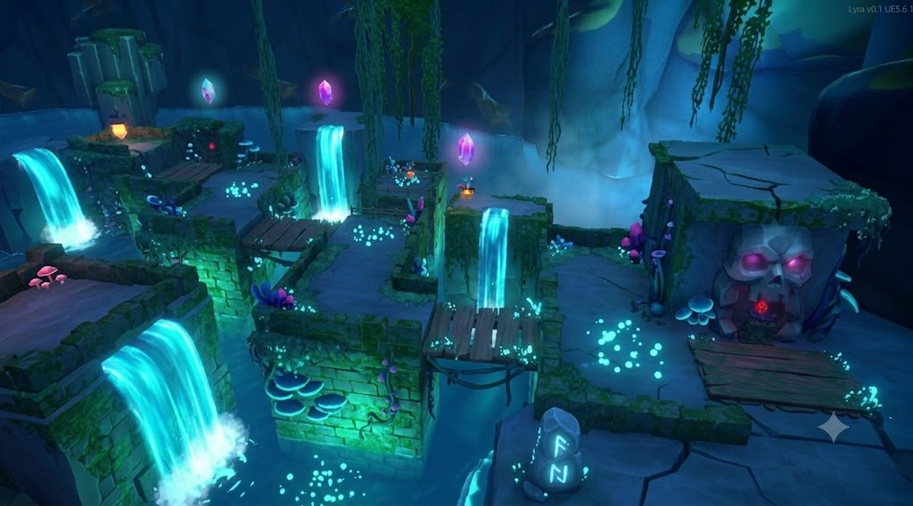
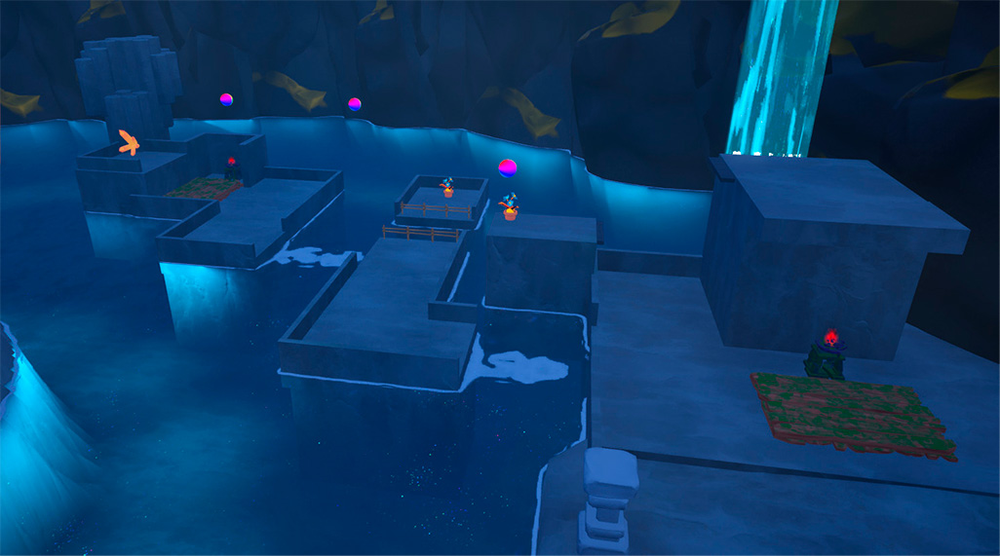

Redefining the transition from blockout to dressing with Generative AI as a co-creation partner.
Overview
2025 - 2026
This project tackles one of the biggest friction points in game development: the transition between the technical blockout (where player metrics and navigation are defined) and the set dressing phase.
I designed a co-creation pipeline that integrates Generative AI directly into the Unreal Engine 5 level design workflow. The goal is to use it as a high-speed iteration tool that respects the gameplay metrics defined during blockout, with every design decision staying human.
Contribution
Designed and documented a five-phase AI-assisted pipeline integrating Claude, ChatGPT, Gemini and Jenkins.
Ran a full A/B production test comparing two Lyra levels under both workflows.
Built four reusable prompts validated across genres and visual styles.
Delivered an interactive web report with legibility analysis and phase-by-phase breakdown.
Friction lives between blockout and dressing. In real production, the level designer understands the functional needs of the space, but communicating how those decisions should translate into a specific visual direction is expensive in both time and coordination.
Hover a phase to reveal what it involves.
01
Market Analysis
Market Analysis
Brainstorming
Design + Art
Market referrals
02
Top-Down Map
Top-Down Map
Level storyboard
Mechanics in use (atoms)
Level beats contextualization
Objectives
03
Blockout
Blockout
Focus on composition
Objectives visualization
Metrics validation
Player main paths
Player secondary paths
04
Dressing
Dressing
Concept art list
Conceptualization
05
QA Validation
QA Validation
Focus on composition
Objectives visualization
Metrics validation
Player main paths
Player secondary paths
The traditional five-phase pipeline used on Lyra.
The pipeline is iterative: Top-Down Map and Blockout each cycle through feedback rounds, and QA loops back to Blockout via playtesting.
3-5
correction cycles per level area between blockout and dressing in the Hills Level baseline.
30%
of written guidelines still caused misinterpretations even with explicit dressing rules in the LDD.
1-3h
to build a single Unreal package for QA, before any actual testing could begin.
The Pipeline
Explore each phase side by side. Pick a phase to compare the traditional workflow against the AI-assisted one. Every phase kept the designer at the centre, and AI intervened only where the bottleneck was communication or materialization.
01 · Briefing
Tools used in this phase:Claude
Translate gameplay parameters into a structured visual brief that both design and art can execute without follow-up questions.
Traditional
Unstructured references
Hours on ArtStation, Pinterest and Figma moodboards. Loose visual references that leave gameplay-critical decisions to the artist's interpretation.
6-8hteam time
0.55specificity ratio
AI-Assisted
Structured briefing prompt
Claude receives the GDD and level parameters, returns a brief with narrative framing, visual priorities tied to guidance, a color palette justified by function, and a list of elements to suppress.
<2hteam time
0.88specificity ratio
Outcome
Every visual priority in the brief specifies which guidance technique it serves; every color is justified by its navigation function, not by aesthetics.
02 · Top-Down Map
Tools used in this phase:ClaudeHTML output
Turn a dense, designer-only Confluence document into an interactive diagram anyone on the team can read in minutes.
Traditional
Hand-drawn Confluence map
Zone layout, height map, blockout screenshots and progression lines coexist in the same canvas. Extracting the progression logic takes 20-30 minutes of active reading per team member.
2-6hproduction
6.2/10legibility
AI-Assisted
Interactive HTML diagram
Claude parses the source image, extracts zone hierarchy and connection types, and rebuilds it as a browsable HTML with height-coded lanes, typed transitions and an inline legibility analysis.
<3hproduction
8.5/10legibility
Outcome
Reading time from ~30 minutes to under 10. The auto-analysis also surfaced two design gaps that the original diagram never exposed.
Construction stays in the engine. What AI changes is the validation loop between iterations, entering as a neutral reader with no prior context about the level.
Traditional
Self-review + external playtest
The designer who built the level is the worst person to evaluate whether it communicates direction. First bias-free reading only arrives at external playtesting, after ~30 hours of committed work.
12-14hproduction
3-4hper rework loop
AI-Assisted
Compositional analysis in 4 minutes
Claude analyses a blockout screenshot from a pure guidance perspective: dominant focal point, directional vectors, principal affordance, path hierarchy, guidance failures. Then writes a Gemini prompt that turns each failure into a visual correction.
9-11hproduction
4 minper validation
Outcome
Bias-free feedback shifts from external playtesting (after construction) to the blockout phase itself, when corrections are still cheap.
Give the artist a concrete visual anchor before the first art pass, without commissioning concept art.
Traditional
Concept art or moodboards
Placeholder self-dressing pass by the level designer (4h), art bible alignment meeting (2h), first art pass (4h). Multiple correction cycles because the conversation is anchored to written descriptions.
12hproduction
4-8hconcept art per beat
AI-Assisted
Image-to-image blockout dressing
ChatGPT or Gemini take a blockout screenshot and return a dressed version in the target visual style, preserving geometry, sightlines and the position of the principal affordance.
7-8hproduction
10 minper variant
Outcome
From one variant per session to 5-8. The AI-generated image works as a shared visual artefact that anchors the conversation between designer and artist from the start.
05 · QA Validation
Tools used in this phase:JenkinsCustom Dashboard
The automation strategy that pairs with the AI work: remove the compilation and distribution overhead from every QA cycle.
Traditional
Manual builds + Drive uploads
1-3 hours per build in Unreal, 30 minutes per upload to Google Drive, plus the failed builds that force a full restart. The person triggering the build cannot work on the project during that time.
1-3hper build
+30 mindistribution
Automated
Jenkins nightly builds + Dashboard
Every night Jenkins pulls from Perforce, compiles, runs the automated functional tests and publishes the build. A web dashboard exposes the state of the project at any moment. 30 builds delivered with 87% success rate during production.
~7 minfull pipeline
0 minmanual work
Outcome
Manual overhead drops to negligible. QA becomes a web page consultation instead of an active cost per sprint.
The prompts I actually shipped
Four prompts carried the whole pipeline. Each one names the metric it serves, the technique it supports and the elements the model may not add, which is the same brief I would hand a collaborator.
These were written for Lyra: its metrics, its visual language, its rules. The structure carries over to another project, the contents get rewritten.
ClaudeTurns GDD parameters into a visual brief the art team can execute without follow-up questions.
[Your GDD Attached] I'm designing a level for a 3D puzzle-adventure game called Lyra. The player controls a character with the following metrics: movement speed of 500, a dragon companion with a throwing range of 200 and a shooting range of 100.
The level I'm designing is the Cave Level. It is a mid-game area. The intended emotional arc is: the player enters feeling enclosed and slightly disoriented, and gradually discovers a sense of wonder as they progress deeper into the space.
The game's existing visual language is stylized with a cozy/wholesome tone, with references to titles like Kena: Bridge of Spirits or A Short Hike dungeon design. The target audience are people with no much time, on average 15-30 years old looking for a relaxing themed game.
Based on this, generate a narrative and technical brief called "Claude_[LevelName]_Briefing" that includes:
1. A one-paragraph narrative framing for the level (lore/tone).
2. A list of visual priorities directly tied to player guidance. For each one, specify which gameplay mechanic or navigation goal it supports.
3. A recommended color palette (3-4 colors max) with a justification for each color based on guidance logic, not just aesthetics.
4. A list of visual elements that should be suppressed or de-emphasized to avoid distracting the player from the main path.
ClaudeRebuilds a dense Confluence bubble diagram as a browsable HTML document with an inline legibility audit.
[YOUR TOP-DOWN IMAGE HERE] "I'm attaching a top-down map / bubble diagram image of a level from a game. Analyze the image and generate a clean, interactive HTML bubble diagram that reconstructs and improves it.
From the image, extract: (1) the zone names and their hierarchical order (e.g. height levels, acts, or regions), (2) the connections between zones — distinguishing primary player flow from special transitions like teleports, vehicles, or loading zones, (3) any mechanic or objective labels visible on nodes.
Build the HTML with: horizontal lanes per hierarchy level, color-coded node cards by zone type (entry, tutorial, puzzle, transition, exit), edge-to-edge SVG arrows that connect to card borders and never overlap card text, animated dashed lines for special transitions, hover tooltips explaining each zone's mechanic and guidance role, and an inline legibility analysis section at the bottom comparing the original diagram to the generated output with scores.
Use a light background with high-contrast accent colors. No external dependencies except Google Fonts. The SVG must sit behind all node cards using z-index."
Reading time dropped from around 30 minutes to under 10, and the auto-audit surfaced two design gaps the original diagram never exposed.
ClaudeReads a blockout screenshot as a first-time player would, then writes the image prompt that fixes what it found.
"I am attaching a screenshot from a game level. Analyze it strictly from a player guidance perspective — do not comment on visual quality, art style, or technical aspects. Provide your analysis in exactly this structure:
1. DOMINANT FOCAL POINT — What is the first element the player's eye is drawn to? Is this the intended navigation target or an unintended distraction?
2. DIRECTIONAL VECTORS — List every implicit line in the composition (geometry edges, light shafts, path curvature, object placement) and indicate where each one leads the player's gaze. Flag any vectors that contradict each other.
3. PRINCIPAL AFFORDANCE — Identify the most visually dominant interactive or navigational element. State whether its scale, contrast, and position are sufficient to communicate its role to a first-time player.
4. PATH HIERARCHY — Assess whether the main path is visually dominant over secondary routes. If secondary paths compete with the main one, specify where and why.
5. GUIDANCE FAILURES — List any specific areas where the composition actively misleads the player or fails to communicate direction. Be precise: describe the location in the frame (top-left, centre, background, etc.).
6. IMPROVEMENT SUGGESTIONS — For each failure identified in point 5, give one concrete change that could be made at blockout stage (geometry, scale, or lighting only — no dressing). Format each suggestion as: [PROBLEM] → [SPECIFIC FIX]. Do not summarise. Do not add conclusions. After point 6, add a seventh section:
7. GEMINI IMAGE PROMPT — Write a prompt ready to paste into an image editing tool (Gemini or ChatGPT). The prompt must: open by attaching the same screenshot and instructing the tool not to change the art style, geometry, camera angle, or character design; then list each failure from point 5 as a numbered correction with a specific visual instruction (what to change, in which direction, and to what degree); close by specifying the intended brightness hierarchy of the final image from highest to lowest contrast. Write it in the second person, addressed directly to the image tool. Do not explain or justify the corrections — only instruct."
This one took three to four revisions before it behaved, and that development cost never showed up in the time metric.
ChatGPT / GeminiDresses a blockout screenshot in the target visual language while holding the gameplay-critical composition in place.
"I am attaching a screenshot from a 3D game level blockout. Apply the visual style described below while strictly preserving the original composition.
Constraints:
1. Do not change the geometry, camera angle, scale, or composition of the original image. The basaltic columns, ground plane, and overall spatial layout must remain in their exact positions.
2. Apply the following visual style: stylized cozy fantasy with a cool color palette dominated by deep blues, layered with magenta and cyan accents. Add bioluminescent details on rocks and vegetation, particularly on edges and crevices. Use soft volumetric lighting to create atmospheric depth, with a slightly hazy quality in the background.
3. Preserve any guidance cues visible in the blockout. The bright open area in the background should remain the brightest region of the dressed image, acting as the principal affordance for the player. Do not introduce light sources elsewhere that compete with it.
4. Do not add new gameplay elements such as doors, mechanisms, switches, interactable crystals, or any object that the player could read as a puzzle component. Decorative bioluminescent vegetation or ambient particles are acceptable, but they must remain clearly non-interactive.
Output a single dressed image that an art team member could use as a visual reference before working on the actual dressing in the engine."
The output still needs a human pass, since constraint 4 is exactly the kind of rule a model will quietly bend.
Blockout to dressing, in one prompt
Drag the handle to see what the model was allowed to change. The input was a raw greybox screenshot from the Cave Level. The output came back in a single iteration, with the camera, the geometry and the brightness hierarchy left where the blockout put them.


BlockoutAI reference
Camera angle preserved
Base geometry preserved
Brightest region stays the principal affordance
No new interactive elements
Those four lines were constraints written into the prompt, and checking the output against them is the verification pass that every generation needs.
What this is for
A reference like this validates a direction before the art pass begins. The output stays approximate on purpose, and its job is to show quickly whether the guidance intent survives contact with the visual language. The engine work still happens in the engine, by an artist.
The constraints get rewritten per project. Lyra needed rules about interactable crystals and brightness hierarchy; another game would need its own. See the full prompt above.
A/B production test: Hills vs Cave.
Two levels of Lyra, developed by the same student team, on the same engine version, with the same target audience and the same core mechanics. One under the traditional pipeline, one under the AI-assisted pipeline. Different levels, controlled variables, honest limitations.
Bars scaled to a 14h maximumTotal tracked~36h → ~24h
* QA validation hours on the Hills Level were never tracked reliably, which is itself part of the finding. Bar shown as an estimate.
Hours per phase · Hills Level vs Cave Level.
So… did AI actually make me a better Level Designer?
Not exactly. It made me faster at briefing, documentation and visual iteration, and more precise at communicating guidance intent to an artist. The construction work inside the engine stayed exactly as slow as it always was.
The interesting part is discovering exactly which parts of my job AI could touch, and which parts it had no business touching at all.
Sounds great. There's a catch.
Those numbers describe this team, on these two levels, at this scope. They describe a specific set of bottlenecks responding well to a specific set of tools, and they stop there.
Decisions that stayed mine
What the space asks the player to do
Where the objective sits and how it reads
Which mechanic each room teaches
Pacing between beats
Whether a fix actually worked
Work I handed to AI
Structuring the brief from GDD parameters
Rebuilding the top-down map as a readable document
Reading a blockout without prior context
Generating dressing references to react to
Turning findings into an actionable image prompt
What I Actually Learned
AI removes friction.
The phases that improved dramatically were the ones where the manual cost was organising and aligning information across roles: briefing, documentation, visualisation, validation. The phases that barely moved were the ones where the work was construction inside the engine. That work still needed a human with a mouse and an opinion.
The biggest gains happened in the seams between disciplines.
DesignArtQA
The gain lives in the gaps between the boxes.
Every shortcut creates a checkpoint.
The dressing prompt returned a usable visual reference in about ten minutes, work that would have taken hours of concept art. But every single generation needed a manual review pass, because it liked to add decorative elements that were never in the blockout. The net gain stays positive. The review time doesn't disappear just because you didn't plan for it.
AI moves the work from creation to verification.
CreationVerification
work
Catch the bias earlier.
After thirty hours inside a level, I stop seeing it the way a player sees it for the first time. That familiarity bias is structural: it comes with owning the space. AI doesn't cure it. What it does is let a reader with zero context look at the blockout on day two instead of at external playtesting on week six.
The earlier you catch the problem, the cheaper it is to fix.
BeforeBlockoutDressingPlaytest
AfterBlockoutAI checkDressingPlaytest
Same bias, much earlier warning. Playtesting stays where it was.
If I did this project again…
Knowing where my evidence stops is the whole point of having run the experiment, so this is the part I would want a hiring manager to read carefully.
Build the same level twice.
I compared two different levels. Layout, scope and beat count all differ, so the pipeline was never the only variable moving.
Account for the team getting better.
Cave came after Hills. Part of that 33% is simply a team that had already made the obvious mistakes once.
Hand the evaluation to someone else.
I designed the pipeline, operated it and measured it. Three roles that would normally sit with three people.
Budget the prompt-stabilising cost up front.
The guidance prompt took three to four revisions before it behaved. That cost never appeared in the time metric, and any team adopting this pays it on day one.
Keep every playtest where it was.
AI moved the first bias-free signal earlier. Treating a compositional read as a verdict would put the blindness straight back in.
The experiment gave me usable evidence and a working pipeline. I'd rather present it as evidence than dress it up as a magic number.
The pipeline is the real deliverable.
What survives this project is a five-phase workflow, a set of reusable prompts, evaluation criteria that produce comparable data, and a clear map of where AI earns its place. Watch where the tag actually lands.
GDDHuman source of truth
BriefingStructure and specificity
Top-DownLegibility and reading time
GuidanceEarly unbiased read
DressingShared visual anchor
BlockoutStill built by hand
QAAutomated by Jenkins
AI does the heavy liftingAI assists, designer decidesAutomation, no generative AIHuman only
Three of seven phases have no generative AI in them at all. That absence is the finding.
Where I'd take this next.
01
Same level, twice
Rebuild Hills under the AI pipeline so the layout stops being a confounding variable and the pipeline is the only thing that changed.
02
More genres
This was validated on a cozy stylised puzzle-adventure. Horror, cyberpunk and hyper-realistic work would expose which prompts carry hidden assumptions about the target aesthetic.
03
More disciplines
Narrative, sound, encounter design and combat balancing share the same friction patterns: cross-discipline communication, repeated iteration, familiarity bias. Each could carry its own validated prompt set.
04
Engine integration
Right now everything lives outside Unreal and gets exported by hand. Model Context Protocol integration would let the model read scenes, blueprints and asset metadata straight from the editor.
05
Professional validation
My baseline was a student team building a cozy game for the first time. Running this where the manual process has already been optimised for years would tell me whether the pipeline compensates for inexperience or raises a real ceiling.
How I'd bring this into a studio
A thesis is not a rollout plan. If I joined a team tomorrow and someone asked me to put AI into the level design pipeline, this is the order I would do it in, and the reasoning comes from what did and didn't work on Lyra.
01
Measure the current pipeline before touching it
Two or three weeks of honest time tracking per phase, plus a count of how many correction cycles a level goes through between blockout and dressing. Without that baseline there is no way to tell an improvement from a coincidence.
02
Start with briefing, because it is the cheapest place to be wrong
The briefing phase produces a document, not a build. Nothing ships from it, nothing breaks if the output is bad, and the designer reads every word before it reaches anyone else. It is also where the reduction was largest, so it earns trust fast.
03
Automate builds in parallel, as a separate track
Nightly builds and a status dashboard have nothing to do with generative AI, and they pay for themselves regardless of whether the rest of this succeeds. Running them as an independent workstream also means the AI experiment is never blocked waiting on a compile.
04
Budget the prompt-stabilising time as real work
A prompt that behaves reliably is a small internal tool, and it needs the same treatment: a first version, a few rounds of use, and someone responsible for it. Teams that skip this decide the approach failed when what actually failed was the third draft of a prompt.
05
Keep a named human on the approval of every output
Every generation gets a review pass before it reaches an artist or a build, and that pass belongs to a person, not to a process. The moment a generated reference is treated as a decision rather than a proposal, the verification cost gets hidden instead of removed.
None of this requires a team to commit to generative AI as a strategy. It requires one designer with a baseline, one phase to test on, and the discipline to stop when the numbers say the gain is not there.